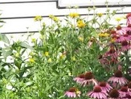
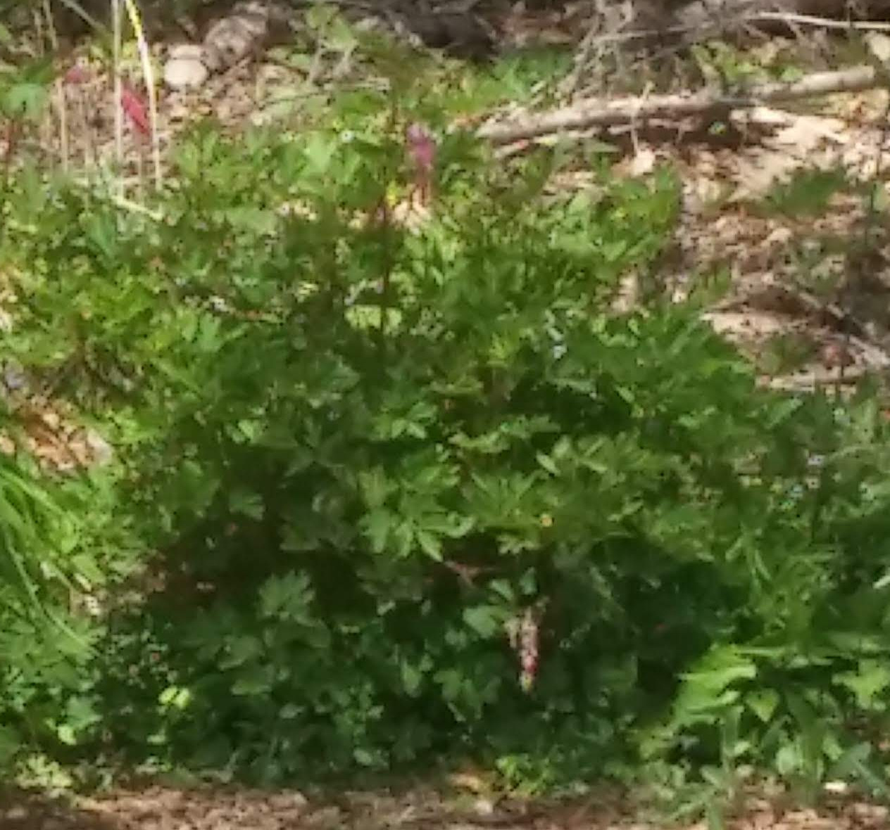
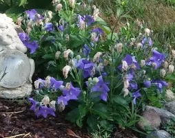
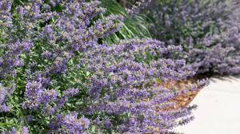

General Tiger Lilly(Turks's Cap) Info
- Blooms in the early summer
- cut back when flowers fade
- Thin as needed
- General fertilizer
- Especially pesky to most lillies are little red beetles, kill when they appear and spray
- They spread slowly and have been moved since the photo
- This type is only in this garden , but lillies are in just about every garden
- For more info visit Tiger lilly info
General Black-eye Susan Info
- Blooms mid Summer
- Deadhead regularly to promote new blooms
- Thin in spring and fall, these will take over the garden!
- General fertilizer
- 
- Usually deer and ground hog likes these
- Perenniel,At the end of the flowering season,cut down to ground.
- Found everywhere in yard front and back
- For more info visit black-eyed Susan info
A summer image of the front woods edge garden , a side view

General Tulip Info
- Bloom in the spring
- Clip all foliage after flower fades and leaves start to yellow
- No need to thin
- General fertilizer

- Pests include deer,bunnies
- Fall planted bulbs that don't always give good blooms
- Located in various gardens with several colors and sizes
- For more info visit Tulip info
General Phlox Info
- Blooms in the summer
- Clip all foliage after flower fades, deadhead and cut down occasionally
- Thin in spring and during season as flower spreads
- General fertilizer

- Pests may include deer but rare
- Tall plant with sometimes massive heads, great for bouquets
- Located in various gardens mostly in front, with several colors including pink, purple and white
- For more info visit Phlox info
General Daylillies Info
- Blooms early summer
- Clip flowers after they fade
- Divided in 2020 but may need it again
- General fertilizer
- Pests may include deer but rare/ poisonous to
- Low growing with yellow and rose colored flowers
- Located in various gardens mostly in front wood garden
- For more info visit Daylilly info
General Bleeding Heart Info
- Blooms late spring / early summer
- Cut back after all flowers fade
- Show up randomly mostly in pink
- General fertilizer
- 
- Pests may include deer but rare
- Low growing with white and pink colored flowers
- Located in various gardens mostly in front wood garden
- For more info visit Bleeding Heart info

General CandyTuft Info
- Blooms in the spring
- Clip flowers after they fades, plant will stay green
- No real need to thin
- General fertilizer
- No known pests!
- Perenniel, low maintenance
- just the one plant , for now
- For more info visit candytuft info
General Bellflower(Campanula) Info
- Blooms in the early summer
- Clip all foliage after flower fades, deadhead regularly
- No need to thin however they sometimes pop up in random places
- General fertilizer
- 
- No known pests
- Perenniel,low growing
- Located in various gardens mostly in front with purple/blue blooms
- For more info visit Bellflower info
General Primrose Info
- Blooms in the spring
- Clip all flowers after they fade
- No need to thin
- General fertilizer
- No known pests
- Perenniel,low growing
- Located in front woods only right now
- For more info visit Primrose info
General Catmint Info
- Blooms all summer
- Clip flowers after they fade
- divide when too big for area(divided 2020)
- General fertilizer
- 
- No known pests attracks lots of bees
- Perenniel,can get lanky
- Located in front and back woods only right now
- For more info visit Catmint info

General Pulmonaria Info
- Blooms late spring , early summer
- Clip faded flowers/leaves
- Divide as needed
- General fertilizer

- no known pests
- better in part shade, they fade fast in the summer gardens
- Located in amny gardens, does best in shady areas
- For more info visit Pulmonaria info
General Daffodil Info
- Blooms in the spring
- Clip all foliage after flower fades and leaves start to yellow<< /li>
- No thinning neccesary , deadhead regularly
- General fertilizer

- Pests may include deer and rabbits but rare
- several varieties in the gardens also known as Jonquil as pictured
- Located in various gardens mostly in front and side , yellow and white
- For more info visit Daffodil info
A summer image of the front woods edge garden